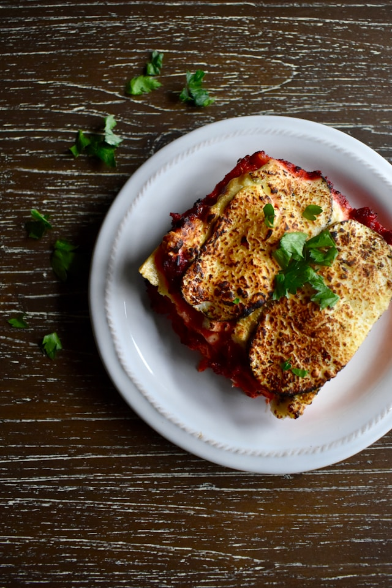

Lasagna

Description
This easy Lasagna Recipe is meaty, cheesy, and packed with flavor in every bite. Homemade lasagna is better than any restaurant version and it feeds a crowd for way less than going out to eat.
Lasagna is the perfect meal, and of all of the recipes I've tried over the years, this is the perfect lasagna. We loved it so much, we even turned it into Lasagna Roll Ups. It's flavorful and satisfying, but also easy to make. It's delicious as-is, but you can make it your own by swapping in your favorite ingredients.
Ingredients
- Ground beef - We used 80/20 beef (20% fat content) for a juicier lasagna.
- Onion - we use yellow onion, or sweet onion works well
- Garlic cloves - you can add more if you love garlic
- Red wine (or beef broth) - This amps up the flavor of your sauce (avoid using cooking wine).
- Marinara sauce - Use homemade marinara or store-bought.
- Dried thyme - Italian seasoning, basil, or oregano can be substituted
- Sugar - balances the acidity of the tomatoes
- Lasagna noodles - Cook these al dente; they'll continue to soften as the lasagna bakes.
How To Make Lasagna
- Brown the beef - Add oil to a deep pan and sautee onion and beef until browned, 5 minutes then add garlic and stir another minute.
- Finish the sauce - Pour in 1/4 cup of wine and stir until almost evaporated. Add marinara, salt, pepper, thyme, sugar, and parsley; bring to a simmer, then cover and cook 5 minutes.
- Make the cheese filling - Combine all of the cheese sauce ingredients and 1 cup of mozzarella in a mixing bowl (reserve the rest for later).
- Prep - Preheat your oven to 375ºF and cook the lasagna noodles in a pot of well-salted water until al dente.
- Assemble - Spread 1/2 cup of the meat sauce on the bottom of a 9×13-inch casserole dish. Add 3 noodles, followed by 1/3 of the meat sauce, 1 cup of mozzarella, and half of the ricotta mixture. Repeat, then for the top layer, add 3 noodles, 1/3 of the meat sauce, and the remaining mozzarella.
- Bake - Cover with foil and bake at 375˚F for 45 minutes, then remove the foil and broil for 3 to 5 minutes, or until the cheese is lightly browned.